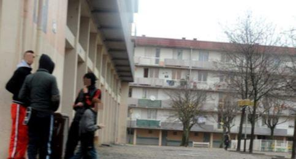
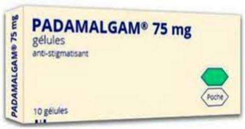

Aujourd’hui nous allons changer un peu de registre. Après avoir publié deux ou trois articles qui se voulaient sérieux sur les conflits du monde, nous allons vous procurer modestement quelques commentaires sur tout ce que l’on peut entendre de nos jours grâce à notre si belle langue française. Notre Revue étant celle de l’Institut Français de Donetsk, puisse la lecture de ce petit billet sans prétention faire passer un bon moment à ceux et celles qui étudient notre langue.
Nous allons faire porter votre attention sur tout ce que l’on entend, et à quoi on ne fait souvent même plus attention, et qui pourtant est largement utilisé pour nous conditionner au quotidien. Avocats comme journalistes sont les champions de cette nouvelle langue, à travers une succession de petites perles, toutes authentiques pour le malheur de notre société.
Ainsi de cette personne « connue pour des incivilités, des petits délits » …. vous aurez tous compris qu’il s’agissait de trafic de drogue, de voitures vandalisées comme de vols avec violence sur des personnes âgées et d’insultes à agents de la force publique.
On poursuivra en disant au procès « qu’il s’agit de sa première condamnation » – en d’autres mots, c’est la première fois qu’il se fait prendre ! Selon ses voisins, « il était si gentil » et selon sa famille, il n’aurait jamais commis une chose pareille : « mon fils n’est pas un terroriste » – entendu combien de fois ?
« Il s’est senti insulté » – est-ce une raison pour ce qui s’est passé après ? Surtout que certains en auraient le droit (Corses, personnes racialisées) et d’autres pas… Profitons-en pour dire un mot sur le terme que je viens d’utiliser : la langue française familière - comme toutes les autres ! - est particulièrement bien pourvue en termes dérogatoires ou méprisants, à l’égard des personnes d’origines ou d’apparence différente. La bonne éducation vous enseigne de les éviter, pour d’évidentes raisons. On a par ailleurs du mal à trouver dénomination de ces personnes dans leur ensemble, sauf encore une fois à recourir à d’horribles qualificatifs, dont l’usage vous condamnera immédiatement à l’opprobre dans la société que vous fréquentez (en clair, vous ne serez plus invités). Grâce soit donc rendue à ces militants extrémistes et pénibles, qui en créant dans notre belle France et à l’Université notamment, des ateliers et des conférences « interdits aux blancs et à usage exclusif des personnes racialisées » nous ont ainsi fait connaitre ce néologisme brillant et fort commode, dont ils ont légitimé l’utilisation !
« Franchement, je n’ai rien compris, ça s’est passé très vite » : suite du paragraphe précédent, avec un député du parti au pouvoir désormais en France, qui assomma à coup de casque de moto un contradicteur (jadis du même parti d’ailleurs) Même qualificatif, et mêmes excuses – resservir une louche d’impulsivité au passage, à laquelle ont droit certaines catégories.
Plus tragique « il a paniqué après avoir donné un coup de trop à la jeune femme » et ça croyez-moi, je l’ai lu … Variante : « il a eu une pulsion » (Badinter reconnaissait que c’était un de ses artifices préférés). Comme il devient facile d’excuser l’innommable, en disant n’importe quoi !
Plus amusant (encore que...) « mon client passait par là, a entendu des coups de feu, il s’est baissé, quand il s’est relevé, il a vu un pistolet par terre devant lui sur le trottoir, il l’a donc ramassé, et là les policiers lui sont tombés dessus… ». Variante améliorée qui marche toujours : « il n’a pas reconnu les policiers qui étaient en civil, donc il a pris peur …etc … ».
« Il avait envoyé des SMS disant qu’il voulait faire sauter la cathédrale de Strasbourg ». Bon, il ne l’a pas fait, alors ? intention n’est pas crime – et cela passait encore en France, jusqu’à ces toutes dernières années …. Ainsi de cet algérien chercheur à Genève au CNRS (un sacré nid, pour ceux qui ne connaissent pas) qui cherchait tout simplement une caserne à faire sauter, trouva celle des chasseurs alpins de Cran-Gevrier, en fut empêché grâce aux écoutes de la police, mais on n’allait pas en faire toute une histoire n’est-ce-pas ? On entendit à son procès – où il fut bien sûr acquitté, cela se passait encore comme ça en France avant les attentats – qu’il « venait d’une communauté marquée par l’histoire », ceci excusant cela (originaire de Sétif, aux évènements connus de ceux qui se souviennent de la guerre de l’Algérie, ce qui était le cas de ses juges qui avaient bien révisé – enfin, la moitié de l’histoire, on ne peut pas tout leur demander).
Dire que X, truand notoire, est séparé de sa compagne, permet surtout de ne pas lier son nom aux deux petits ministres qui passent chez elle de tendres vacances en location, alors que c’est surtout bien commode pour mettre au nom de celle-ci des biens immobiliers et éviter les saisies. Et puis séparé, réconcilié, qui va aller vérifier ?
Quittons un peu les prétoires, pour les petites discussions de la vie quotidienne. Dire « rien de personnel » comme on l’entend si souvent (nothing personal, en anglais) semblera le comble de la correction, alors qu’on aimerait tant passer l’autre au lance-flamme …
Demander « êtes-vous choqué par …. » est une astuce connue qui permet à l’avance d’obtenir la réponse qu’on veut à une question, personne ne voulant justement avoir l’air d’être choqué. Taux de réussite voisin de 100 %, utilisé depuis des années (« êtes-vous choqué par la nudité sur les plages corses, par le mariage des homosexuels, par les femmes voilées dans la rue, par la différence d’âge de ce couple de premier plan ... ») car bien sûr si on est choqué c’est qu’on est vieux, borné, contre les jeunes et le progrès, voire même l’évolution de l’espèce humaine en général… Suggestion de l’auteur : répondez en utilisant le terme « contrarié ».
Si vous êtes arrivé à bien répondre à votre interlocuteur, et qu’il se sent acculé, il y a beaucoup de chances qu’il réponde par le fameux « je ne vais pas polémiquer » (en anglais « I will not follow you on that »). En clair, vous n’avez pas placé le débat à un niveau assez haut pour votre interlocuteur, qui lui plane à des niveaux que vous n’atteindrez jamais. Tant pis pour vous si cela vous semblait pertinent.
En dernier recours, pratiquez l’insulte. Traitez les gens de sinistres abrutis, de fascistes ou de vieux réactionnaire : c’est autorisé, puisque vous êtes le camp du Bien (à ne faire bien entendu que si la salle ou l’auditoire vous est acquis). Les nouvelles que l’on publie et qui vous déplaisent sont bien entendu des fake-news (n’ayez aucune gêne à utiliser des termes américains, cela fait tellement sérieux et vous fait gagner 10 % de crédibilité).
Si on n’est pas d’accord avec vous alors que vous venez d’être élu, c’est forcément qu’on ne respecte pas la démocratie – comme tout devient simple.
Concentré des deux précédentes : c’est que « vous répandez des messages de haine ». Et si l’on doute de quelqu’un comme la conseillère sénégalaise du président Macron qui envoie un SMS « yes, la meuf est dead » au sujet de la mort de Simone Weil, c’est qu’on est bien évidemment un ignoble raciste… épatant, non ? Largement utilisé dans le monde, alors nous n’y passerons pas plus de temps.
Autre astuce : face à une réponse difficilement parable, chercher un mot précis que l’on isolera à l’aide d’une référence facile, ou alors un jeu de mot évident, une inexactitude sans conséquence, et rebondir dessus – cela s’appelle une pirouette, et ça évite de répondre. Si la salle vous est acquise, l’éclat de rire partira aussitôt (surtout s’il y a des chefs de claque, cas fréquent) À ce sujet, bien les briefer : lancer les applaudissements à chaque pause dans le discours du chef, certes - mais parfois on obtient une salve de ceux-ci alors que l’orateur vient d’énoncer quelque chose de fort triste, genre chômage qui augmente ou terrorisme qui est là pour durer. Effet cocasse garanti, la presse aux ordres passera sous silence bien sûr – d’où l’intérêt des médias un peu démarqués, style RT, Sputnik ou le Canard Enchaîné tout simplement.
Maintenant vous avez fait un impair, et certains l’ont relevé : aucune importance, portez plainte et comme ça vous renvoyez le problème sur l’autre, que vous mettez sur la défensive. Même le Président le fait maintenant (contre un photographe). Que la plainte n’ait aucune suite n’a aucune importance, ce n’est pas ce que retiendra le quidam.
Intéressons-nous aux attentats qui ont endeuillé certains pays. S’interroger à ce sujet sur la surreprésentation de certaines catégories socio-ethniques (ça se dit ?) lors de ceux-ci peut conduire à trouver les bonnes réponses – il importe alors de nier l’évidence, et pour cela un peu de métier sera nécessaire, tant l’exercice sera ardu. Mais pas de problème, vous avez déjà tout l’entraînement des paragraphes précédents, et avoir un public conditionné depuis longtemps sera un atout précieux. On commencera par dire qu’il y a aussi des violeurs ou des terroristes dans des Français bien de chez nous – un peu moins sans doute, mais on ne va pas s’attacher aux chiffres, on est là pour des idées – c’est pour cela qu’on a fait des études de lettres, non ? et si vous disposez d’un Anders Breivik sous la main (vous savez, la Norvège en 2011) gardez-le et resservez-le autant que de besoin, c’est-à-dire souvent….
Faites attention à aux éléments de langage dont vos équipes étaient si fières il y a quelques années, jusqu’à ce que la multiplication des évènements les rende un peu obsolètes – et le public est alors sans pitié dès qu’il constate que vous tournez en boucle, et pire que vous vous payez sa tête : exit donc les « actes isolés d’un déséquilibré », les « assassins non liés à une organisation terroriste » (c’est une excuse ?) le fameux « pas d’amalgame » caricaturé en boite de médicaments PADAMALGAM … il a fallu trouve autre chose. Pas de souci, vous avez des équipes qui y travaillent.
« Impossible pour des raisons légales » : bon, c’est comme ça, circulez, il n’y a rien à voir. « on fait ça pour des raisons politiques » : on a gagné la guerre, mais on s’en va quand même – ou alors ce contrat est un désastre, mais il faut le faire quand même. « une zone grise », une « grey area » (qu’il y aura toujours d’ailleurs) : pas de problèmes, vous impressionnez ceux qui vous font face, en ayant l’air tellement au courant de choses qu’ils ignorent ….
L’Histoire montre pourtant que les peuples, même lors des périodes les plus sinistres, arrivent toujours à essayer de comprendre, à percer leurs mystificateurs, et ne se laissent pas berner éternellement, développant pour commencer des moyens de communication alternatifs (humour, contrepèteries, vocabulaire alternatif, médias parallèles désormais) Cela a tout simplement été depuis toujours le prix de la survie, celle des individus pour commencer et la joute éternelle des mots n’est pas prête de s’arrêter.
Partager cette page